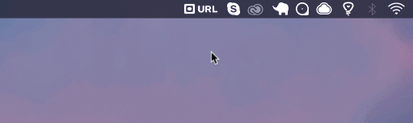

Take Full Page Website Screenshots in Your MacOS Menu Bar
 Created by Wynter Jones
Created by Wynter Jones
WebSnap lives in your menubar for quick access.
Take screenshots of any website and save instantly to any folder on your desktop. Select from full page Desktop, Mobile or Thumbnail.
Use the keyboard shortcut COMMAND+SHIFT+V when you have a URL copied to your clipboard to auto-paste directly into WebSnap.
WebSnap exists to replace the typical chrome extension for taking screenshots while making it faster to save screenshots to quickly manage on your Mac.

Download Now
Version: 0.0.1
OS: MacOS
Size: 56.5MB
* requires Google Chrome Browser to be installed
Want to Do More?
The goal for WebSnap is to eventually create a website screenshot manager. If you are interested in this project, let me know in the comments!